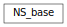

proteus.NumericalSolution module
A hierarchy of classes for managing comlete numerical solution implementations

-
class
proteus.NumericalSolution.NS_base(so, pList, nList, sList, opts, simFlagsList=None)[source]
The base class for managing the numerical solution of PDE’s.
The constructor must build all the objects required by a numerical
method to approximate the solution over a sequence of time intervals.
calculateSolution(runName) carries out the numerical solution.
-
calculateSolution(runName)[source]
-
preStep(model)[source]
-
postStep(model)[source]
-
setWeakDirichletConditions(model)[source]
-
restrictFromFineMesh(model)[source]
-
archiveInitialSolution(model, index)[source]
-
archiveSolution(model, index, t=None)[source]
-
closeArchive(model, index)[source]
-
initializeViewSolution(model)[source]
-
viewSolution(model, initialCondition=False)[source]
-
finalizeViewSolution(model)[source]